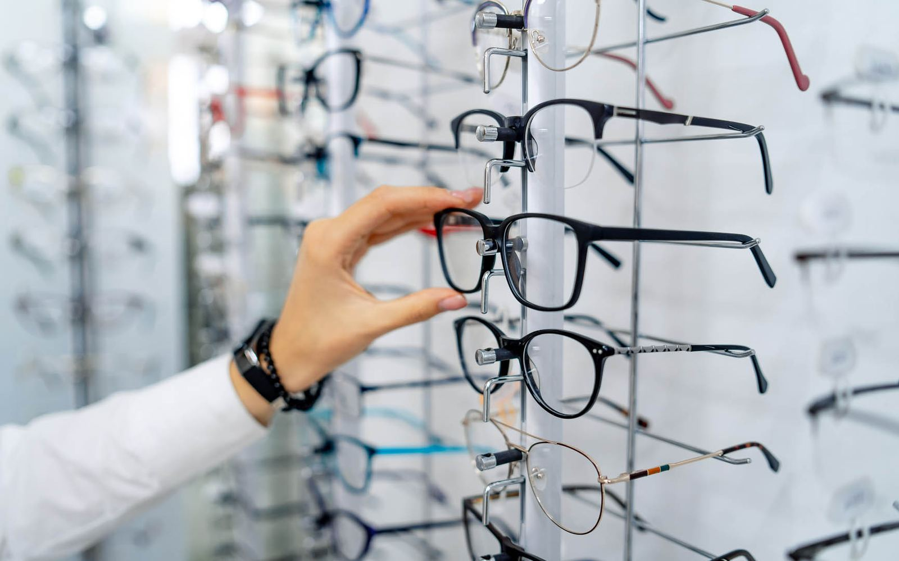
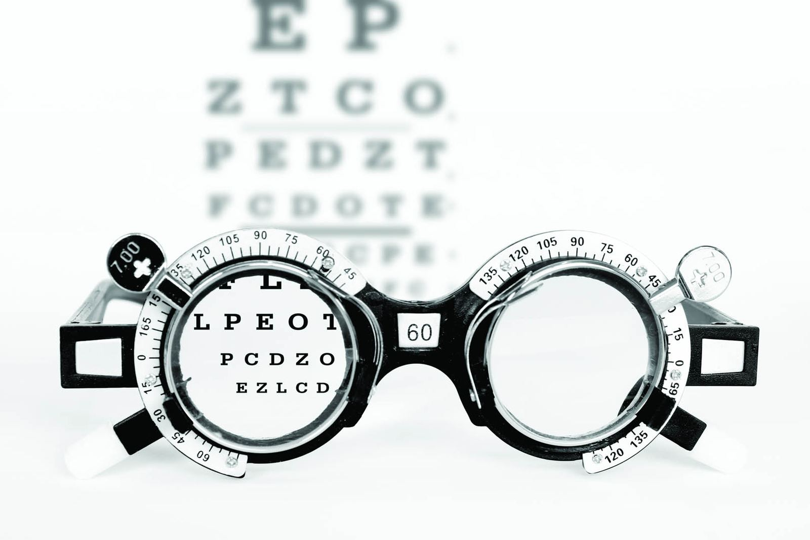

Brilleinnfatninger
Fra tynne metallinnfatninger til kraftig acetat. Vi hjelper deg å velge etter ansiktsform, styrke og hvordan du bruker brillene.

Vi tar oss tid til å måle, forklare og finne glass og innfatning som faktisk passer deg – enten du trenger nye briller, kontaktlinser eller bare en kontroll.
Vi er en liten optikerbutikk med bredt fagfelt. Det betyr at du får svar på det du lurer på i samme besøk – ikke en henvisning videre.

Vi forklarer hva vi måler underveis, og du får tallene skrevet ned. Er synet endret, viser vi deg hva det betyr for glass eller linser – uten at du må bestemme deg på stedet.
Vi har et bredt og godt utvalg av brilleinnfatninger og solbriller av god kvalitet – og glass av beste kvalitet og siste teknologi.
Fra tynne metallinnfatninger til kraftig acetat. Vi hjelper deg å velge etter ansiktsform, styrke og hvordan du bruker brillene.
Solbriller med eller uten styrke. Vi tilpasser glassene slik at du får riktig beskyttelse og fortsatt ser godt.
Skjermbriller tilpasset avstanden du faktisk jobber på. Det er forskjellen mellom å se skarpt og å bli sliten i hodet.
Gausdal Optikk holder til på Segalstad Bru, og driver også Valdres optikk og Gol optikk. Samme fag, tre dører.
Vestringsveien 12, 2651 Østre Gausdal. Her har vi hele utvalget og alle undersøkelser.
Våre kolleger i Valdres. Ring 61 22 61 50, så setter vi deg over eller finner et tidspunkt.
Avdelingen på Gol. Samme tjenester og samme utvalg av innfatninger og linser.
Ring oss på 61 22 61 50, eller send en forespørsel med tidspunktet som passer deg. Vi svarer så fort vi kan.